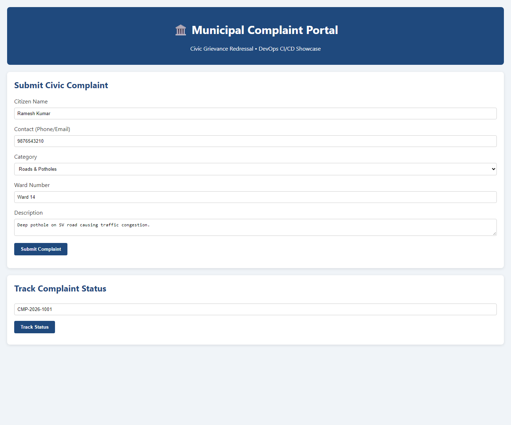
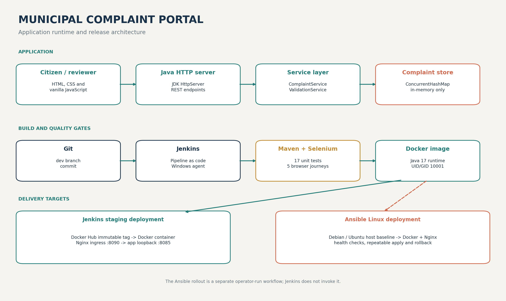
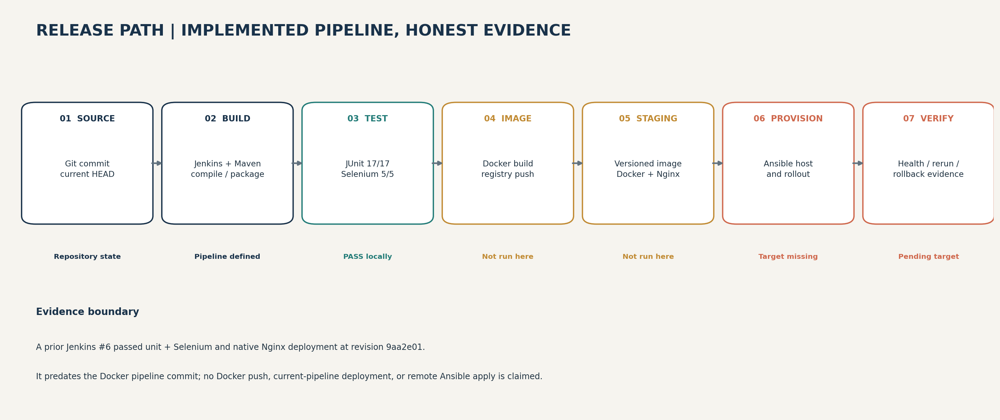

From citizen report to release gate.
Municipal Complaint Portal - an end-to-end DevOps learning project.
Release hold: external rollout pendingLocal unit and Selenium gates pass. Registry publication and remote Ansible provisioning are explicitly not claimed.

Speaker note
Open with the release decision. This is an honest status review, not a claim that a Docker Hub release or Linux target has been deployed.
A small application, two delivery paths.

Speaker note
Application code uses the JDK HTTP server, service validation, and an in-memory concurrent map. Docker is the deployable unit; Nginx is ingress. The current design is a learning MVP.
Quality gates come before packaging.

Speaker note
The pipeline builds a versioned tag from Maven version, Jenkins build number, and commit. Unit and Selenium tests run before Docker build and push. Ansible is a separate controlled operator step.
Two local gates passed.
JUnit unit tests
0 failures, 0 errors, offline Maven run.
Selenium journeys
Headless Chrome; Failsafe quality gate.
Local health probes
Temporary JAR and existing :8085 / :8090 listeners returned status UP.
Speaker note
The tests cover complaint registration, validation, tracking, and reviewer flow. These tests do not prove container or remote-host health.
Immutable tags make a release traceable.
Pipeline design
- Multi-stage Maven build and Java 17 runtime.
- Runs as UID/GID 10001.
- Push immutable version tag and convenience
latest. - Deploy the immutable tag; archive health evidence.
Current boundary
- Docker base images are not cached locally.
- No Docker build or registry push was run.
Dockerfileand.dockerignoreare untracked at the inspected HEAD.- Historical Jenkins #6 predates the Docker pipeline commit.
Speaker note
Before a Jenkins release, review and commit the current Docker build context. Use Jenkins credential dockerhub-credentials; never store a token in source or parameters.
Ansible describes the target; a real host proves it.
- Install Docker, Nginx, and required Python modules.
- Render proxy config; keep backend at loopback :8085.
- Deploy a versioned image; verify backend and ingress :8090.
- Repeat for idempotency; deliberately reject a candidate to test rollback.
Not executed here
Ansible Core is unavailable and the inventory remains the reserved address 192.0.2.10.
No SSH/sudo target was provided. YAML parsing is not remote provisioning evidence.
Speaker note
Explain the rollback block: it captures the previous container image ID, restores it after failed validation, and still returns failure so the candidate cannot pass the release gate.
Keep historical success in context.
Recorded Jenkins #6
Checked out 9aa2e01; 17 unit and 5 Selenium tests passed; earlier native JAR/Nginx deployment succeeded.
Current Docker release
Docker pipeline was added later. No current Docker build, Docker Hub tag, deployment evidence JSON, or Ansible run is available.
Never present the older build as proof of a later Docker or Ansible release.
Speaker note
The report includes the checked-out revision and scope. The local screenshot shows the application only, not Docker, Nginx, Jenkins, or a remote target.
The MVP is not production-ready.
Current limitations
- In-memory complaint state; no database or backups.
- Production identity, authorization, TLS, and privacy controls are missing.
- No centralized logs, metrics, traces, or alerting.
- No SBOM, signed image, or digest-pinned base images.
Next milestones
- Run Docker pipeline and authorized staging Ansible apply.
- Add durable persistence and recovery tests.
- Add reviewer roles, TLS, and audit controls.
- Harden supply chain and production observability.
Speaker note
Prioritize data durability and identity/security before any real citizen data is accepted. Keep the current portal isolated as a demo until these are implemented.
Show what ran. Label what remains.
Suggested 7-minute demo
- Submit or track a complaint in the local portal.
- Run unit tests and the Selenium quality gate.
- Show the Jenkins #6 history and explain its revision.
- Walk through Docker and Ansible runbooks and release blockers.
- Finish with risks, rollback model, and P0 next step.
Likely questions
Why an immutable image tag? What does idempotency mean? Why does rollback use an image ID? Why is this not production-ready?
Model answers are in Task15_Viva_QA.md.
Speaker note
Use Task15_Viva_QA.md and TASK15_FINAL_RELEASE.md as the demo checklist. Do not expose tokens, citizen PII, or production endpoints in a recording.